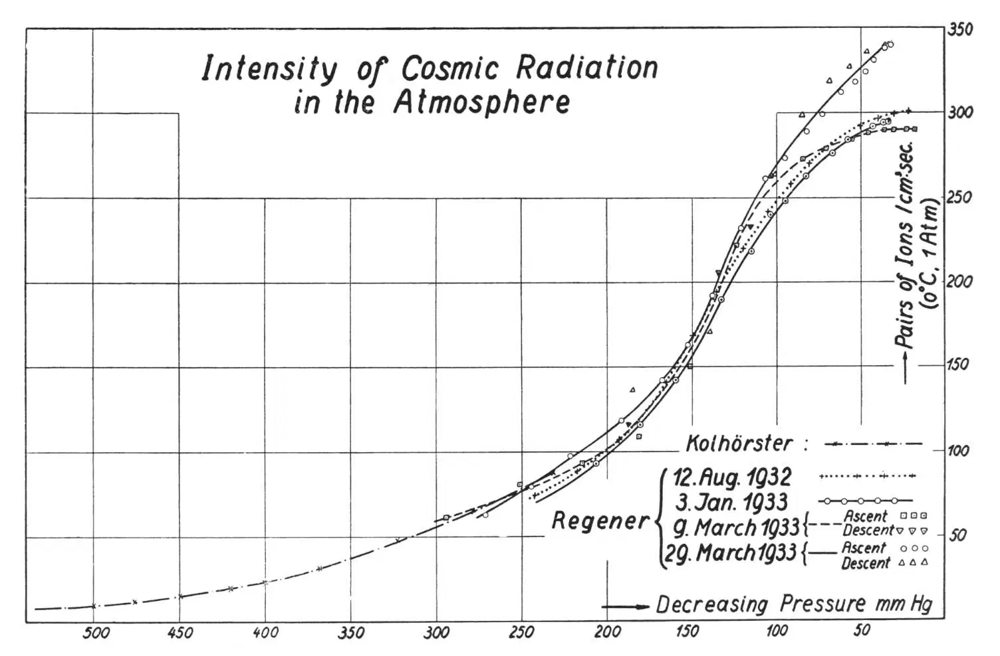
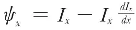
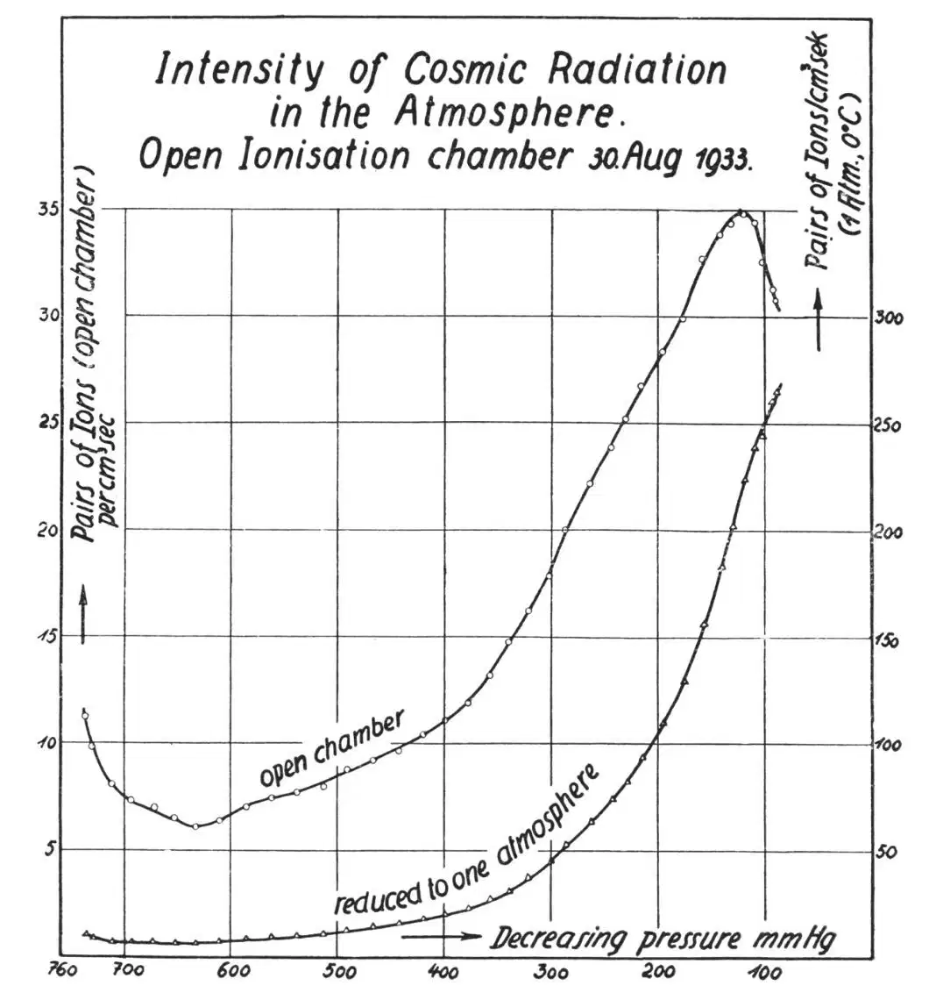

中文
中文E. Regener
Editor’s Note
Erich Regener reports in more detail on his observations of the ionisation caused by cosmic rays in the upper atmosphere. Using electrometers born aloft in balloons, he and colleagues made a number of measurements at very high altitudes, where the air pressure fell below 50 mm Hg. In three trials, their devices gave consistent results; a fourth did not, but Regener noted that other researchers had observed a magnetic storm on this day which may have disturbed the measurements. In total, the data suggested that the cosmic radiation consisted of three distinct components of different penetrating power. 中文
IN recent years I have endeavoured to explore the decay of the intensity of cosmic radiation over as wide a range as possible after its entrance into the earth’s atmosphere. I believe that such an investigation is indispensable before a theory of the nature of cosmic radiation can be put forward. In Nature1 and in the Physikalische Zeitschrift2 I have already given some preliminary account of our measurements of the intensity of the cosmic radiation in the upper atmosphere. I propose to give here some further results, obtained in recent ascents with registering balloons, but first a few improvements of the apparatus which we have introduced must be described. 中文
The balloon electrometer includes an electrometer system (a thin Wollaston wire, a quartz sling giving the directing power), the photographic objective, projecting the electrometer wire on the photographic plate. The wire is illuminated every four minutes from the side, so that it appears bright on a dark background on the photographic plate. There is also an aneroid barometer for the measurement of the air pressure and a bimetallic lamella for measuring the temperature. The movement of the aneroid, when the pressure decreases, limits by a pointer the image of the electrometer wire on the photographic plate. Since the measurement of the pressure is the most delicate part, especially when the pressure is low, we have added to the ordinary aneroid a second one, which only starts indicating when the pressure falls below one hundred millimetres. By observing the balloons in the air with two theodolites from a base of three to four kilometres, we have been able to prove that the measurements of the pressure with these two aneroids are fairly exact. The agreement with the height deduced from the pressure measurements was very good. 中文
We have also employed another form of balloon electrometer. Our balloon electrometers hitherto constructed each had the ionisation chamber filled with air at a pressure of three or four to five atmospheres. The new electrometer has an open ionisation chamber, that is to say, a chamber communicating with the air outside through a tube containing phosphorus pentoxide. The pressure in this chamber decreases as the balloon rises in the free atmosphere, and the ionisation chamber in this case must be larger in order to obtain adequate sensitivity. But such an arrangement is very convenient for measuring the absolute value of the ionisation due to the radiation, because it is much easier to obtain the saturation current at a low pressure. In the ordinary ionisation chamber, which is filled with gas at high pressure, it is well known that it is very difficult to obtain the saturation current. 中文
Fig. 1 shows the results of the four best registrations of the cosmic radiation with the closed balloon electrometer. The minimum values of the air pressure on these four ascents are respectively:
August 12, 1932: 22 mm. mercury, 5.4 atmospheres pressure in the ionisation chamber.
January 3, 1933: 34 mm. mercury, 4.45 atmospheres.
March 9, 1933: 17.6 mm. mercury (this is the lowest pressure hitherto reached), 3.28 atmospheres.
March 29, 1933: 32 mm. mercury, 5.33 atmospheres. 中文

Fig. 1. 中文
It is noteworthy that the first three ascents agree very well among themselves. Also the fourth ascent agrees with the others very well at the medium heights at a pressure of 150 mm. mercury (that is, at a height of about twelve kilometres). But in the upper atmosphere, that is, at pressures of less than 100 mm., at heights greater than fifteen kilometres, and even more so at heights of twenty kilometres, the intensity begins to be much greater than on the other ascents, so that the maximum value is nearly fifteen percent greater than on the other ascents. This is probably not due to the inaccuracy of the measurements. It can be seen that the middle parts of the fourth curve agree very well with the others. Moreover the fourth registration, of March 29, 1933, is the best of all with the closed electrometers. It was also possible to obtain observations during the descent of the balloon (Fig. 1). These observations showed that the ordinary and the secondary aneroids worked very well. 中文
The temperature during the hour in which the balloon was in the stratosphere varies comparatively little, from 6.5° to 11 ℃. That is due to the “Cellophane” case, surrounding the electrometer like the glass of a forcing house and protecting it against the cold in the stratosphere. 中文
We believe that the difference of the fourth curve from the others is real, and we have tried to find an explanation. We searched for the cause in the circumstances accompanying the four ascents. On the fourth ascent there was a new moon and we thought that perhaps radioactivity of the moon was the cause of the greater intensity on this day; for on the other ascents the moon was not in the sky. Incidentally, it should be noted that at a pressure of twenty or thirty millimetres of mercury, already one-third of the γ-radiation of ordinary radioactive bodies could penetrate into the atmosphere. But a little calculation shows that the radioactivity of the moon would have to be improbably great to do this, so this explanation cannot be true. Then we inquired into the magnetic disturbances on the four days. Both Prof. A. Nippoldt at Potsdam and Dr. A. Corlin in northern Sweden informed me that on March 29 there was a magnetic disturbance of medium strength, but the other days were magnetically calm. It would be remarkable if there were a connexion between the magnetic intensity and the intensity of the cosmic rays in the highest parts of the atmosphere, and only in the highest parts; that is to say, that there are additional rays (soft rays) there, perhaps coming from a sunspot. But up to now we have observed this but once. Further observations are necessary in order to ascertain whether this is real. 中文
From the measurements of the decay of the intensity of the cosmic radiation in Lake Constance, my collaborator, Dr. W. Kramer3, has deduced that there are many components of the radiation. 中文
From Sir James Jeans’s hypothesis, one can calculate that the hardest two components correspond to the annihilation of a helium atom and of a proton. But there are many assumptions in this calculation. It is often objected that the fact ascertained in our ionisation curve in the atmosphere, that the ionisation curve approaches a maximum value at the top of the atmosphere, is not in favour of the hypothesis, that the primary radiation is electromagnetic. Electromagnetic radiation coming from outside into the atmosphere of the earth will produce secondary radiation, and we shall find a maximum value of the intensity in the lower atmosphere, perhaps at twenty kilometres, and the intensity will diminish towards the top of the atmosphere. 中文
It is easy to show, however, that the observed form of the ionisation curve agrees with the assumption that the radiation is electromagnetic. The observed curve is altered by the fact that the rays come from all directions. The rays coming from the side, that is, the rays which are already saturated with secondary radiation, because of the long distance they have travelled, are of greater account. My collaborator, Mr. B. Gross4, has shown that it is possible to calculate from the curve observed for rays incident in all directions the corresponding curve of uni-directional rays. If the function for the rays from all directions be Ix, and ψx be the corresponding function for the intensity of rays coming from one direction only, then

. The curve for rays entering the atmosphere vertically shows that their intensity diminishes towards the top of the atmosphere. Thus it agrees with the suggestion that at least a part of the radiation is electromagnetic. There is also a second maximum produced by the second component of the soft part of the radiation. 中文
I would like to add a few words about the analysis of the radiation into its components. My collaborator, Dr. E. Lenz5, has worked out a useful method for finding whether the radiation is monochromatic or contains more than one component. This method is independent of any assumption regarding the nature of the rays. Suppose that the intensity is a monotonic function of the absorption of monochromatic radiation. When the intensity I is multiplied by the thickness d of the absorbing layer, this gives a curve with a maximum at a certain value of d. If the radiation consists of two components of different penetrating power, then there are two maxima in the curve (let us say in the deformed curve), deduced from the original curve by multiplying the intensity by the thickness of the layer. When our experimental results are plotted in this way, the curve shows that the radiation in the atmosphere consists of two or three components of different penetrating power. 中文
It is also possible in an experimental way to decide whether the decomposition of the radiation in components is real. When the intensity of radiation in the free atmosphere is observed with an open ionisation chamber, we do the same as we have just done in a mathematical way. The ordinary curve of the intensity of the radiation is a curve obtained with an ionisation chamber containing air at a pressure of one atmosphere. When we work with an open ionisation chamber, we find a value of the current in the chamber which is smaller in the same ratio as the pressure in the air, and thus in the chamber also, is smaller than the normal pressure. Thus we obtain directly a deformed ionisation curve, because the pressure is in proportion to the mass of the layer which is penetrated by the rays. 中文
The two measurements made with such an ionisation chamber do not quite satisfy us yet. The first chamber employed was too small (volume only 22 litres) and therefore the sensitivity was inadequate. The second chamber had a volume of 105 litres and therefore the sensitivity was sufficient. A photographic record obtained on August 30 gave good results, but unfortunately the temperature of the instrument went down very low, below –20 ℃., and therefore the corrections needed were a little greater than usual. The apparatus had become too heavy (3.7 kgm.) for our balloons and we did not employ sufficient safeguards against the cold. But on working out the registrations, the curve (Fig. 2) is already better than those with the closed chamber, and agrees very well with the deformed curve calculated above. The second maximum is also noticeable as in the deformed curve, but this maximum is not very distinct and we shall try to ensure more favourable conditions so that as few corrections as possible are necessary. This part of the curve, I believe, is most important for the analysis and the explanation of the curve. 中文

Fig. 2. 中文
In general, the method of employing the open ionisation chamber is very convenient if one wishes to obtain the whole curve from sea-level to the top of the atmosphere, because the observed values with the open chamber vary only from 1 to 5, while the ionisation in the closed chamber varies from 1 to 150. Thus, in Fig. 2, the normal intensity curve is more accurate in the lower parts than with the closed chamber. The values for the normal curve are obtained from the values with the open chamber by multiplying them by p0/p. 中文
I offer my thanks to Mr. B. Auer for helping me in the measurements and to the Notgemeinschaft der Deutschen Wissenschaft for supporting my investigations. 中文
(132, 696-698; 1933)
E. Regener: Technical High School, Stuttgart.
References:
1. Regener, E., Nature, 130, 364 (1932).
2. Regener, E., Phys. Z., 34, 306 (1933).
3. Kramer, W., Z. Phys., 85, 411 (1933).
4. Gross, B., Z. Phys., 83, 214 (1933).
5. Lenz, E., Z. Phys., 83, 194 (1933).
* Paper before Section A (Mathematical and Physical Sciences) of the British Association, delivered at Leicester on September 8.